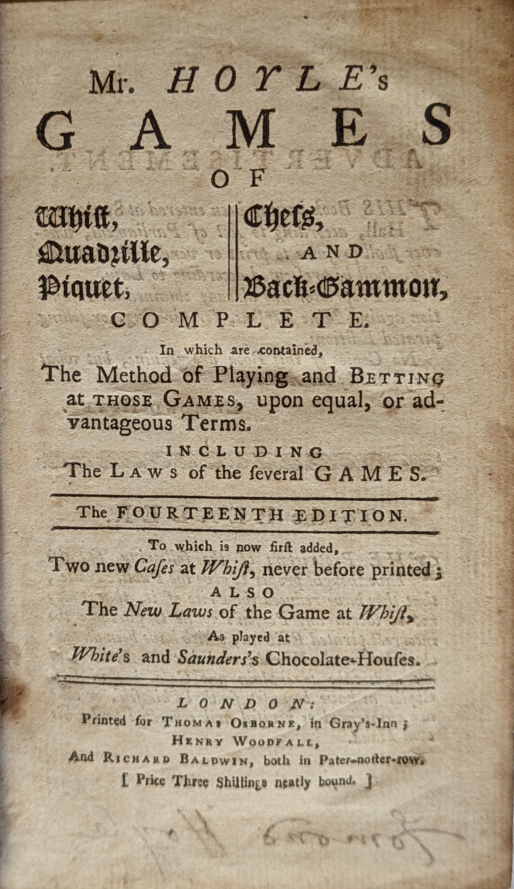
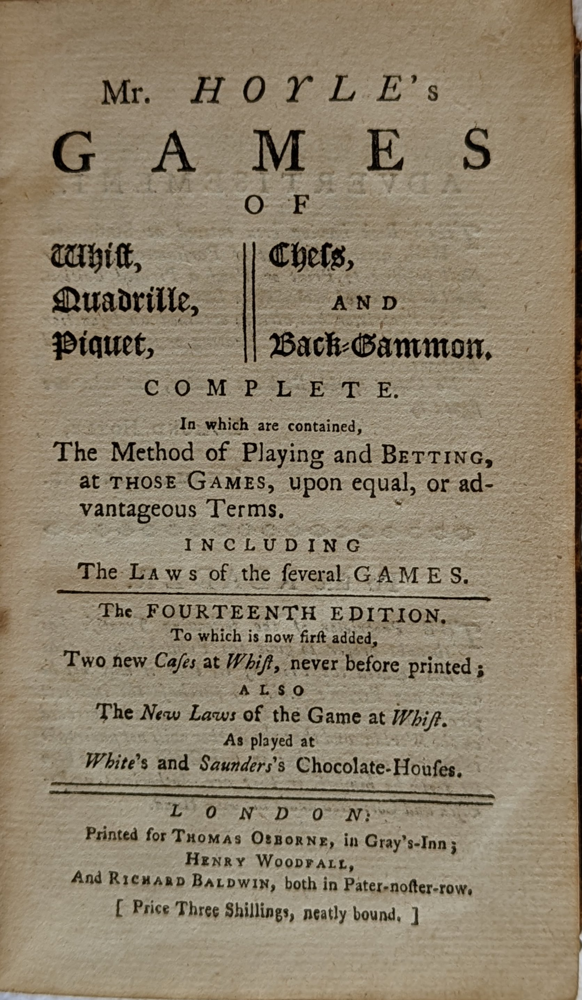

 |
Title: |
Mr. HOYLE's | GAMES | OF | [3 lines to left of double rule] Whist, | Quadrille, | Piquet, | [3 lines to right of double rule] Cheſs, | AND | Back=Gammon, | COMPLETE. | In which are contained, | The Method of Playing and Betting | at those Games, upon equal, or ad-|vantageous Terms. | INCLUDING | The Laws of the ſeveral GAMES. | [rule] | The FOURTEENTH EDITION. | [rule] | To which is now
firſt added, | Two New Caſes at Whiſt, never before printed; | ALSO | The New Laws of the Game at Whiſt, | As played at | White's and Saunders's Chocolate-Houſes. | [double rule] | LONDON: | Printed for Thomas Osborne, in Gray's-Inn; | Henry Woodfall, | And Richard Baldwin, both in Pater-noſter-row. | {Price Three
Shillings, neatly bound.} |
| Collation: |
12o: a6(±a1) B–K12 [$½ (−B1,I3,6) signed]; 114 leaves, pp. [i–ii] iii–xii, [1–3] 4–91 [92–95] 96–120 [121–123] 124–156 [157] 158–172 [173–175] 176–216 [misprinting 161 as 159] |
| Title (Cancellandum): |
 |
Mr. HOYLE's | GAMES | OF | [3 lines to left of double rule] Whist, | Quadrille, | Piquet, | [3 lines to right of double rule] Cheſs, | AND | Back=Gammon, | COMPLETE. | In which are contained, | The Method of Playing and Betting, | at those Games, upon equal, or ad-|vantageous Terms. | INCLUDING | The Laws of the ſeveral GAMES. | [rule] | The FOURTEENTH EDITION. | To which is now firſt
added, | Two New Caſes at Whiſt, never before printed; | ALSO | The New Laws of the Game at Whiſt, | As played at | White's and Saunders's Chocolate-Houſes. | [double rule] | LONDON: | Printed for Thomas Osborne, in Gray's-Inn; | Henry Woodfall, | And Richard Baldwin, both in Pater-noſter-row. | {Price Three
Shillings, neatly bound.} |
| Section Title Whist |
A SHORT | TREATISE | On the GAME of | WHIST. | CONTAINING | The LAWS
of the GAME: | AND ALSO | Some Rules whereby a Beginner may, with due Attention | to them, attain to the
playing it well. | Calculations for thoſe who will Bet the Odds on any | Points of the Score of the
Game then playing and de-|pending. | Cases ſtated, to ſhew what may be effected by a very good | Player in
critical Parts of the Game. | References to Cases, viz. at the End of the Rule, you | are directed how to find them. | Calculations, directing, with moral Certainty, how to | play well any Hand or Game,
by ſhewing the Chances of | your Partner’s having 1, 2, or 3 certain Cards.
| With Variety of Cases added in the Appendix. | [rule] | By Edmond Hoyle, Gent. | [rule] | The Laws of the Game, and an Explanation of the
Calcu-|lations which are neceſſary to be underſtood by thoſe who | would
play it well. | And Also, | A Dictionary for WHIST, which reſolves al-|moſt all the critical Caſes that may
happen at the | Game. | To which is added, | An ARTIFICIAL MEMORY: | Or, an eaſy Method of
aſſiſting the Memory of | thoſe that play at the Game of WHIST. | And ſeveral Cases, not hitherto publiſhed. |
| Section Title Quadrille |
[headpiece] | A SHORT | TREATISE | On the GAME of | QUADRILLE; | SHEWING |
The Odds of winning or loſing moſt Games | that are commonly played; either
by calling | a King, or by playing Sans Prendre. | To which are added, | The LAWS of the GAME. | The Sixth Edition. | By Edmond Hoyle, Gent. | [headpiece] |
| Section Title Piquet and Chess |
[headpiece] | A SHORT | TREATISE | On the GAME of | PIQUET; | DIRECTING, |
With moral Certainty, how to diſcard any | Hand to Advantage, by ſhewing the
Chances | of taking in any one, two, three, four, or | five certain Cards. | Computations for thoſe who Bet their | Money at the Game. | ALSO, | The LAWS of the GAME. | To which are added, | Some Rules and Observations for playing | well at CHESS. | The Sixth Edition. | By Edmond Hoyle, Gent. | [headpiece] |
| Section Title Backgammon |
[headpiece] | A SHORT | TREATISE | On the GAME of | BACK-GAMMON. |
CONTAINING, | [12 lines to left of rule] A Table of the thirty-ſix | Chances, with Directions | how to find out the
Odds of | being hit, upon ſingle, or | double Dice. | Rules whereby a
Beginner | may, with due Attention | to them, attain playing it | well. |
The ſeveral Stages for carry-|rying your Men home, in | order to loſe no
Point. | [12 lines to right of rule] How to find out who is for-|wardeſt to
win a Hit. | Caſes ſtated for Back-Games, | with Directions how to play |
for one. | Caſes ſtated, how to know | when you may have the bet-|ter of
ſaving a Gammon by | running. | Variety of Caſes of Curioſity | and
Inſtruction. | The Laws of the Game. | The Seventh Edition. | By Edmond Hoyle, Gent. | [headpiece] |
| Contents: |
Signature (Page) Reference |
Contents |
Signature (Page) Reference |
Running Titles |
| a1r (i) |
title |
|
|
| a1v (ii) |
‘ADVERTISEMENT. | [...] | To the READER. | [...] | [autograph of Edmond
Hoyle]’ |
|
|
| a2r–a6v (iii–xii) |
‘[row of type orn] | CONTENTS. | [...]’ |
a2v–a6v (iv–xii) |
‘The CONTENTS.’ |
| B1r (1) |
section title whist |
|
|
| B1v (2) |
blank |
|
|
| B2r–E10r (3–91) |
‘[double rule] | A SHORT | TREATISE | On the GAME of | WHIST. |
[...]’ |
B2v–E10r (4–91) |
‘A ſhort Treatise on | the Game of WHIST.’ |
| E10v (92) |
blank |
|
|
| E11r (93) |
section title Quadrille |
|
|
| E11v (94) |
blank |
|
|
| E12r–F12v (95–120) |
‘[double rule] | A SHORT | TREATISE | On the GAME of | QUADRILLE. |
[...]’ |
E12v–F12r (96–119) |
‘A ſhort Treatise on the | Game of QUADRILLE.’ |
|
|
on E12v (96) |
‘A ſhort Treatise on’ |
|
|
F12v (120) |
‘A ſhort Treatise on, &c.’ |
| G1r (121) |
section title Piquet and Chess |
|
|
| G1v (122) |
blank |
|
|
| G2r–H6v (123–156) |
‘[double rule] | A | TREATISE | On the GAME of | PIQUET. |
[...]’ |
G2v–H6v (124–156) |
‘A Treatise on PIQUET.’ |
| H7r–I2v (157–172) |
‘[double rule] | SOME | Rules and Observations | FOR | Playing well at CHESS. | [...]’ |
H7v–I2r (158–171) |
‘Rules and Observations | for Playing at CHESS.’ |
|
|
on H7v (158) |
‘Rules and Observations’ |
|
|
I2v (172) |
‘Rules and Observations, &c.’ |
| I3r (173) |
section title Backgammon |
|
|
| I3v (174) |
blank |
|
|
| I4r–K12v (175–216) |
‘[double rule] | A SHORT | TREATISE | On the GAME of | BACK-GAMMON.
| [...]’ |
I4v–K12r (176–215) |
‘A ſhort Treatise on the | Game of BACK-GAMMON.’ |
|
|
K12v (216) |
‘A ſhort Treatise, &c.’ |
| Catchwords: |
a6r(xi) another [Odds,]; C10r(43) Queen [Queen,]; E3r(77) 12 Reaſon [12 Reaſons.]; G8r(135) [alſo] |
| Press Figures: |
a6r(i):5; B8v(o):5; B11v(i):4; C2v(o):5; C8r(i):3; D11r(o):4; D12r(i):2; E2v(o):2; F8v(o):2; F12r(i):5; G11r(o):2; H7v(i):7; H12v(o):3; I1v(i):5; I6v(o):6; K9r(o):4; K12r(i):3 |
| Publisher: |
Henry Woodfall, Richard Baldwin, Stanley Crowder, John Wilkie |
| Printer: |
Henry Woodfall (inferred) |
| Notices: |
1767-12-12 St. James's Chronicle or the British Evening Post: "This day were published, price 3s. neatly bound in red leather. To which
are added, some new cases at whist, never before printed; also the new laws
of the game at whist, as played at White's and Saunder's Chocolate Houses. A
new edition, being the fourteenth of Mr. Hoyle's Games...Be pleased to
observe, that all genuine copies are signed by Edmond Hoyle, and all others
are pirated or a bad edition, for which a reward is given to any one who
will inform of the sale of them. Printed by assignment from T. Osborne for
H. Woodfall, R. Baldwin, and S. Crowder in Pater-noster-Row; and J. Wilkie,
No. 71, in St. Paul's Church-Yard." |
| Price: |
3s. (title, advertisement) |
| References: |
ESTC T88034, Horr 660, Jessel 807, Rather 49 |
| Copies Seen: |
BFl [I.795/HOYL (b1124820)]; L [7921.dd.2] (Google) (ECCO); O [Jessel f.564]; O [Jessel f.565]; O [Jessel f.566]; O [Johnson f.2063] (John Johnson Collection); Copisarow; CSt [GV1241.H6 1765]; NvLN [GV1241.H69 1765?]; OCl [789.87H F65L2]; PPL [Iu Hoyl Allen 334]; TNJ [GV1241.H8 M14 c.1]; TNJ [GV1241.H8 M14 c.2]; Levy [1086]; Levy [1163]; Levy [1644] (with uncanceled title page); Levy [1827]; Levy [2179] (with both title pages) |
| Other Copies: |
AWn [GV1241.H86]; MRu [R152496]; Om [111.H.12]; DE-15 [82-G-7912]; HAG [KW 972 F 31]; ICR [Fiskesafn 795 Hoy]; LT [Wb 683]; CLU-SC [Barcode:A0000850735]; IaU [GV1241.H69 1765]; IdeKN [GV1241.H6 1765B]; MSaP [GV1241.H695 1795]; NjP [4284.05.479.142]; PU [GV1241.H6 1765]; AuVMOU [795 H867 H14] |
| Notes: |
Thomas Osborne sold his stock and copyrights at a trade sale on 1767-07-23,
shortly before his death on 1767-08-21. His one-third share of the Hoyle copyright
was divided into four lots of one-twelfth share. John Wilkie purchased one share
for
£21, Henry Woodfall for £22, and Stanley Crowder, two shares for £22 each.Probably because of the death of Osborne, the publishers used a different method
of having Hoyle autograph the books. The book was printed and Hoyle was given
cancel
title pages to sign. The cancel titles generally replaced the origianl title page
(a1), but one often finds copies with both title pages and with only the uncancelled
title page. See my blog essay "Every Cancel Tells a Story, Don't It? (part 2)". The cancellans has horizontal
chain lines while the book has vertical throughout.On a1v (ii) the text of cancellans concludes the Advertisement saying "No copies of
this
book are genuine, but what are signed by the Author." The cancellandum has
nearly identical language, but the Advertisement concludes "...but what are
signed by Edmond Hoyle, and Thomas Osborne."The typographical error in the section title for backgammon ('carry-rying') is
amusing and suggests that the type was set from Games.4 where the line break is 'car-rying'. |